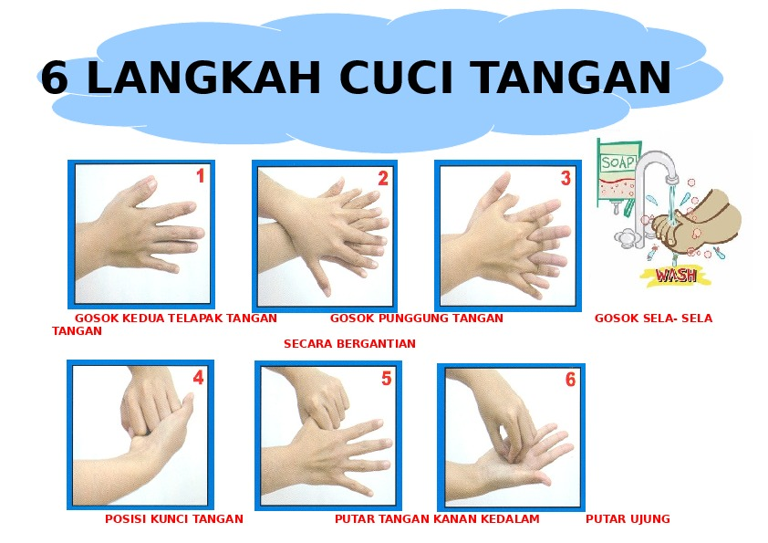
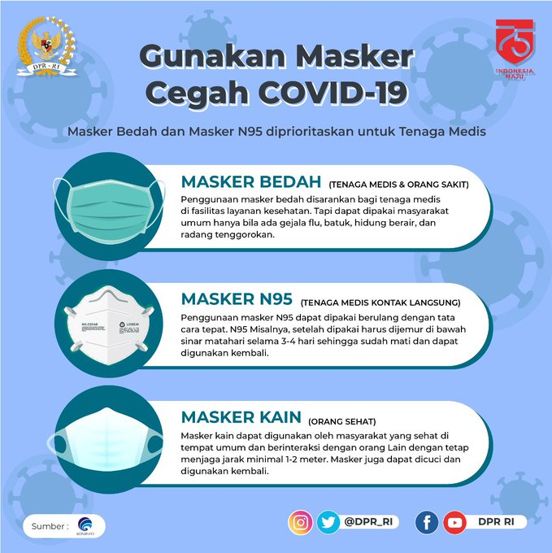
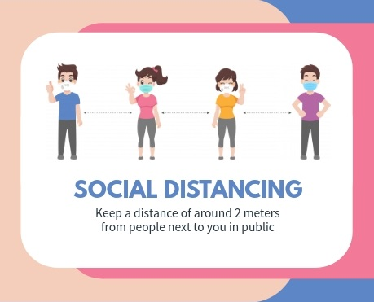

-
Cuci Tangan dengan Benar

Mencuci tangan dengan benar adalah cara paling sederhana namun efektif untuk mencegah penyebaran virus 2019-nCoV. Cucilah tangan dengan air mengalir dan sabun, setidaknya selama 20 detik. Pastikan seluruh bagian tangan tercuci hingga bersih, termasuk punggung tangan, pergelangan tangan, sela-sela jari, dan kuku. Setelah itu, keringkan tangan menggunakan tisu, handuk bersih, atau mesin pengering tangan. Jika Anda adalah pekerja komuter yang berada di dalam transportasi umum, akan sulit untuk menemukan air dan sabun. Anda bisa membersihkan tangan dengan hand sanitizer. Gunakan produk hand sanitizer dengan kandungan alkohol minimal 60% agar lebih efektif membasmi kuman. Cucilah tangan secara teratur, terutama sebelum dan setelah makan, setelah menggunakan toilet, setelah menyentuh hewan, membuang sampah, serta setelah batuk atau bersin. Cuci tangan juga penting dilakukan sebelum menyusui bayi atau memerah ASI.
-
Menggunakan Masker

Banyak yang menggunakan masker kain untuk mencegah infeksi virus Corona, padahal masker tersebut belum tentu efektif. Secara umum, ada dua tipe masker yang bisa Anda digunakan untuk mencegah penularan virus Corona, yaitu masker bedah dan masker N95.
Masker bedah atau surgical mask merupakan masker sekali pakai yang umum digunakan. Masker ini mudah ditemukan, harganya terjangkau, dan nyaman dipakai, sehingga banyak orang yang menggunakan masker ini saat beraktivitas sehari-hari.Meski tidak sepenuhnya efektif mencegah paparan kuman, namun penggunaan masker ini tetap bisa menurunkan risiko penyebaran penyakit infeksi, termasuk infeksi virus Corona. Penggunaan masker lebih disarankan bagi orang yang sedang sakit untuk mencegah penyebaran virus dan kuman, ketimbang pada orang yang sehat.Sedangkan masker N95 adalah jenis masker yang digunakan sebagai salah satu alat pelindung diri atau APD untuk petugas medis yang merawat pasien COVID-19.
Ketika melepaskan masker dari wajah, baik masker bedah maupun masker N95, hindari menyentuh bagian depan masker, sebab bagian tersebut penuh dengan kuman yang menempel. Setelah melepas masker, cucilah tangan dengan sabun atau hand sanitizer, agar tangan bersih dari kuman yang menempel.
-
Menjaga Daya Tahan Tubuh
Daya tahan tubuh yang kuat dapat mencegah munculnya berbagai macam penyakit. Untuk menjaga dan meningkatkan daya tahan tubuh, Anda disarankan untuk mengonsumsi makanan sehat, seperti sayuran dan buah-buahan, dan makanan berprotein, seperti telur, ikan, dan daging tanpa lemak.Selain itu, rutin berolahraga, tidur yang cukup, tidak merokok, dan tidak mengonsumsi minuman beralkohol juga bisa meningkatkan daya tahan tubuh agar terhindar dari penularan virus Corona.Beberapa informasi menyebutkan bahwa berjemur di bawah sinar matahari juga dapat mencegah infeksi virus Corona. Sayangnya hal ini masih perlu diteliti lebih lanjut.
-
Menerapkan Social Distancing

Pembatasan fisik atau physical distancing adalah salah satu langkah penting untuk memutus mata rantai penyebaran virus Corona. Hal ini dapat dilakukan dengan cara tidak bepergian keluar rumah, kecuali untuk keperluan yang mendesak atau darurat, seperti berbelanja bahan makanan atau berobat ketika sakit.Pembatasan fisik juga dilakukan dengan cara menjaga jarak minimal 1 meter dengan orang lain dan selalu menggunakan masker, terutama saat beraktivitas di tempat umum atau keramaian.Jika Anda memiliki salah satu gejala COVID-19 yang bersifat ringan, memiliki riwayat perjalanan atau tinggal di daerah terjangkit virus Corona dalam 14 hari terakhir, atau pernah kontak dengan orang yang dinyatakan positif COVID-19, Anda dianjurkan untuk melakukan isolasi mandiri.Selain itu, isolasi mandiri juga dianjurkan untuk dilakukan oleh orang yang berisiko tinggi terinfeksi virus Corona, seperti lansia atau orang yang memiliki penyakit penyerta, misalnya hipertensi, diabetes, atau daya tahan tubuh yang lemah.
-
Membersihkan rumah dan melakukan disinfeksi secara rutin
Selain kebersihan diri, menjaga kebersihan rumah juga sangat penting dilakukan selama pandemi COVID-19 berlangsung. Hal ini dikarenakan virus Corona terbukti dapat bertahan hidup selama berjam-jam dan bahkan berhari-hari di permukaan suatu benda.Oleh karena itu, rumah harus rutin dibersihkan dan dilakukan disinfeksi secara menyeluruh, termasuk perabotan dan peralatan rumah yang sering disentuh, seperti gagang pintu, remote televisi, kran air, dan permukaan meja.Saat membersihkan atau melakukan disinfeksi, Anda perlu menggunakan sarung tangan dan masker, serta mencuci tangan dengan air bersih dan sabun setelah selesai membersihkan rumah. Hal ini dilakukan untuk mencegah penularan virus Corona yang mungkin saja terjadi.